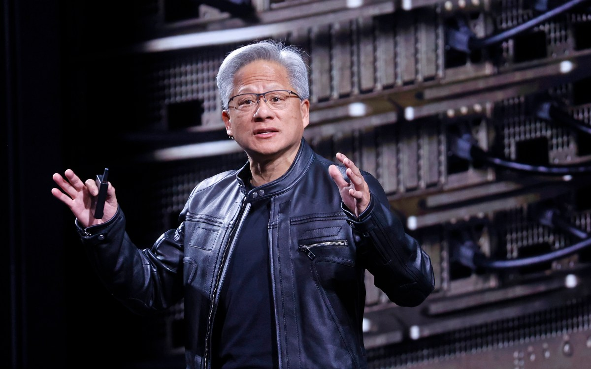
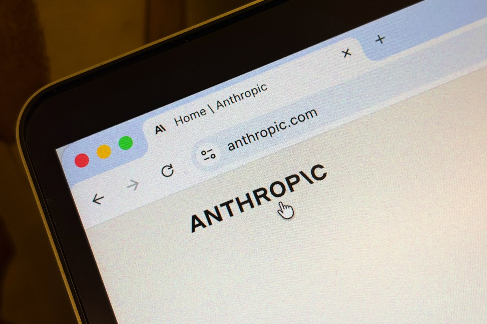
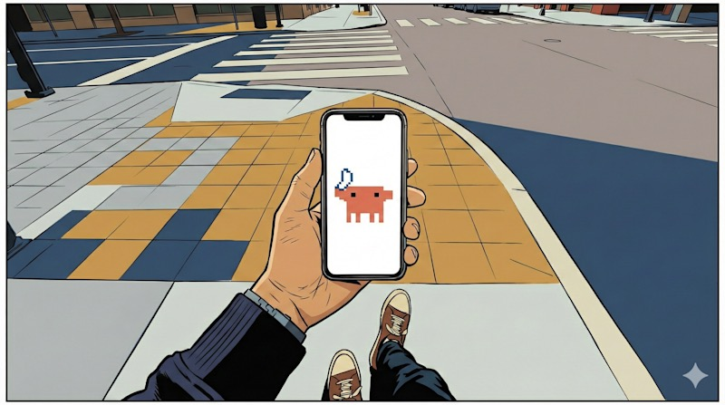
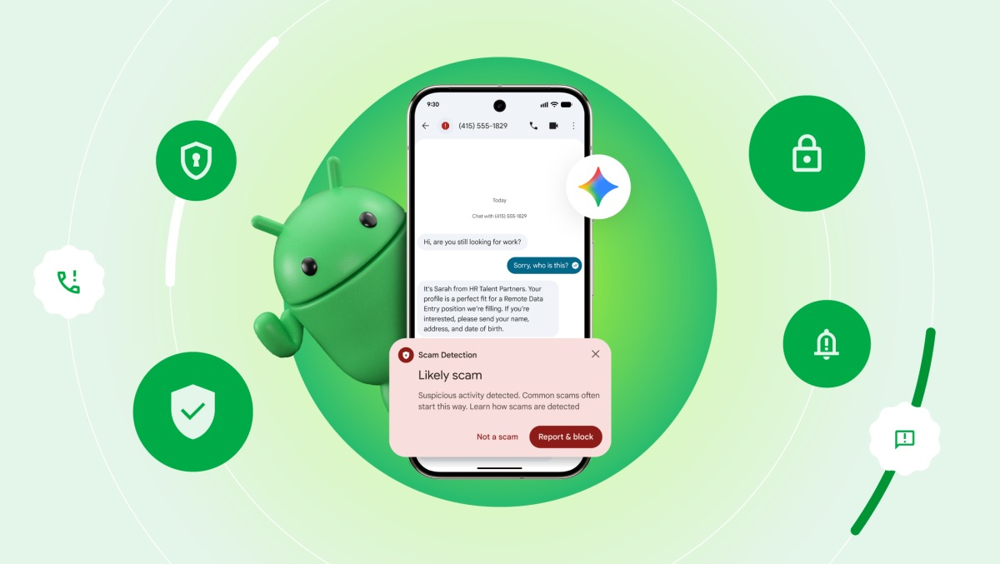
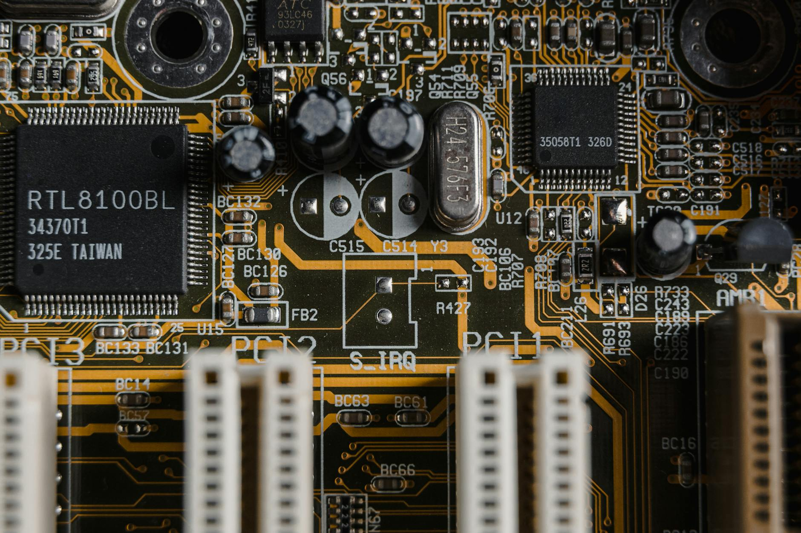

AI DAILY
AI 行业日报
2026年2月26日 · 精选 8 条
01市场数据
英伟达季报再破纪录：单季营收 680 亿美元，黄仁勋称 token 需求"指数级爆发"

英伟达公布最新季度财报，营收 680 亿美元，同比增长 73%，其中数据中心业务贡献 620 亿美元。CEO 黄仁勋在分析师电话会上说："全球对 token 的需求已经完全指数级增长——连我们六年前的旧 GPU 在云端都被用光了，价格还在涨。"
英伟达首次将数据中心收入拆成两部分：510 亿算力收入（主要是 GPU）和 110 亿网络收入（NVLink 等）。全年营收达 2150 亿美元。黄仁勋还透露仍在推进对 OpenAI 的投资，但 SEC 文件强调"不保证交易达成"。
INSIGHT
680 亿美元单季营收，放在两年前是英伟达全年的收入。更值得注意的是网络收入首次单拆——110 亿美元说明 NVLink 已经不是配件，而是和 GPU 平起平坐的独立产品线。算力的瓶颈正在从"芯片够不够"转向"芯片之间连得够不够快"。
02融资收购
Anthropic 收购计算机操作 AI 创企 Vercept，继续加码 Agent 能力

Anthropic 宣布收购西雅图 AI 创企 Vercept，后者曾开发云端 Mac 电脑操作 Agent "Vy"，能像真人一样在远程 MacBook 上完成复杂任务。Vercept 累计融资 5000 万美元，天使投资人包括前谷歌 CEO Eric Schmidt、DeepMind 首席科学家 Jeff Dean、Cruise 创始人 Kyle Vogt。
Vercept 的联合创始人之一 Matt Deitke 此前已被 Meta 以 2.5 亿美元年薪挖走加入超级智能实验室，未随团队加入 Anthropic。这是 Anthropic 继去年 12 月收购 Bun 之后的又一笔收购，持续补强 Agent 工具链。Vercept 产品将于 3 月 25 日关停。
INSIGHT
两个月内连续收购 Bun（代码 Agent）和 Vercept（计算机操作 Agent），Anthropic 补的不是模型能力，而是"手和脚"——让 Claude 从"能思考"变成"能动手"。Vercept 团队来自 Allen AI 生态，意味着 Anthropic 正在把西雅图 AI 人才池纳入自己的引力圈。
03产品发布
Claude Code 推出手机遥控模式 Remote Control，散步遛狗也能写代码

Anthropic 发布 Claude Code 新功能 Remote Control，开发者在终端执行 claude remote-control 后扫码，即可从手机端实时操控本地 Claude Code 会话。本地环境变量、文件系统、MCP 服务器全程保持连接，离开工位也不丢上下文。
产品经理 Noah Zweben 将其定位为"保持心流状态的工具"——"去散步、晒太阳、遛狗，不用断开心流。"目前 Remote Control 为 Research Preview，仅对 Claude Max（$100-$200/月）订阅用户开放，Pro 用户的支持即将到来。
INSIGHT
这个功能解决的是一个真实痛点：Claude Code 在本地跑长任务时，开发者得守在电脑前等它提问。Remote Control 把"等 AI 回话"从工位搬到了口袋里——看似是个小功能，实际上让 AI 编程助手第一次跟着人走，而不是人守着它。
04融资收购
Meta 与 AMD 签数十亿美元芯片大单，或将持有 AMD 10% 股权

Meta 与 AMD 达成大规模定制芯片采购协议，总计采购 6 吉瓦算力的定制处理器。AMD CEO 苏姿丰表示，"每吉瓦算力价值数百亿美元"。AMD 同时向 Meta 发行基于业绩的认股权证，允许其以 0.01 美元/股的价格分批获得最多 1.6 亿股 AMD 股票。
这笔"芯片换股权"的交易使 AMD 盘前股价飙涨 14%。类似的安排 AMD 此前已和 OpenAI 达成过——后者也获得了以相同模式持有 AMD 10% 股权的机会。苏姿丰称首批芯片将于今年下半年交付，认股权证最终行权价格梯级上升至 $600，2031 年到期。
INSIGHT
先是 OpenAI，现在是 Meta——AMD 用"股权换订单"的方式，正在把大客户从买家变成股东。这招很聪明：客户持股后不太可能轻易转向竞品，等于用股权锁定了长期订单。英伟达上周刚和 Meta 签了"数百万颗芯片"的协议，现在 AMD 也拿到了入场券——AI 算力市场正式进入双供应商时代。
05产品发布
阿里开源三款 Qwen3.5 中型模型，24GB 显存的消费级显卡就能跑
阿里宣布 Qwen3.5 开源家族扩容，新增三款中型模型：Qwen3.5-122B-A10B、Qwen3.5-35B-A3B、Qwen3.5-27B（Dense）。其中 35B-A3B 版本已全面超越上一代旗舰 Qwen3-235B-A22B，展示了新架构在效率上的显著提升。
关键亮点：GGUF 量化版可在 24GB 显存的设备上运行，意味着一张 RTX 4090 就能本地部署。所有模型已在 HuggingFace 和 ModelScope 开放下载，个人和企业均可免费商用。同日，阿里云上线了包含 Qwen3.5、GLM-5、MiniMax M2.5、Kimi K2.5 的"Coding Plan"。
INSIGHT
35B 参数量就能超越上代 235B 旗舰，这是 MoE 架构红利在中型模型上的集中体现——激活参数只有 3B，但效果不打折。更实际的意义是：本地部署 AI 的硬件门槛从"集群"降到了"一张消费级显卡"，数据敏感型企业和独立开发者是最直接的受益者。
06产品发布
Gemini 能帮你叫 Uber、点外卖了：Google 手机 Agent 正式上线

Google 宣布 Gemini 在 Android 上新增"任务自动化"功能，可以帮用户叫 Uber、下 DoorDash 外卖订单、订杂货配送等多步骤操作。用户下达指令后，Gemini 在安全沙箱中自动操控 App，全程可实时查看并随时打断。
目前该功能处于 Beta 阶段，仅支持 Pixel 10 和 Samsung Galaxy S26 系列，初期覆盖美国和韩国市场。Apple 去年 WWDC 曾宣布 Siri 将支持类似的跨 App 自动化，但至今未能落地——Google 和三星抢先交卷了。
INSIGHT
手机 Agent 的核心瓶颈不是技术，而是App 厂商是否愿意被"代操作"。Uber、DoorDash 允许 Gemini 替用户操作，是因为这会增加订单量。但换成竞品 App——比如让 Gemini 帮你在美团下单——利益冲突就出来了。初期只覆盖美韩，也说明 Google 在一个一个谈合作。
07融资收购
谷歌前 TPU 团队创业造芯片，MatX 完成 5 亿美元 B 轮，Karpathy 也投了

AI 芯片创企 MatX 宣布完成 5 亿美元 B 轮融资，累计融资 6 亿美元，估值达数十亿美元。Andrej Karpathy 参投并公开背书称，MatX 正在挑战"当今最有趣、回报最高的智力难题"。两位创始人均出自 Google TPU 团队，CEO Reiner Pope 曾参与 PaLM 训练。
MatX 的核心产品 MatX One 采用"可拆分脉动阵列"架构，试图同时实现高吞吐（HBM 路线的优势）和低延迟（SRAM 路线的优势），不走任何一方的极端路线。芯片预计 2027 年出货，瞄准大模型训练和长上下文推理两个场景。
INSIGHT
AI 芯片创企不少，但 MatX 的切入角度不同：不是在英伟达的地盘上做"更便宜的替代品"，而是从架构层面重构算力和存储的关系。Karpathy 用英伟达 4.6 万亿市值来暗示 MatX 的上限，说明他赌的是这个市场足够大，容得下一条全新的技术路线。
08技术突破
AT&T 每天消耗 80 亿 token，重构 AI 编排后成本降了 90%
AT&T 首席数据官 Andy Markus 透露，公司内部 AI 系统日均消耗 80 亿 token，把所有请求都推给大模型"既不可行也不经济"。团队基于 LangChain 构建了多 Agent 编排架构：大语言模型当"主管"，小语言模型当"执行者"，按任务类型分派。
重构后的编排层实现了延迟、速度和成本的三重改善，最显著的是成本降低了 90%。Markus 总结："AI Agent 的未来是大量小语言模型，在特定领域上它们几乎和大模型一样准确。"团队还推出了拖拽式 Agent 构建器 Ask AT&T Workflows，让非技术员工也能自建自动化流程。
INSIGHT
80 亿 token/天是个很有参考价值的数字——一家非科技行业的世界 500 强，AI 用量已经到了这个级别。90% 的成本节省靠的不是换更便宜的模型，而是"让合适的模型干合适的活"。这个案例可能比任何技术论文都更能说明 MoA（Mixture of Agents）的实际价值。
由 Zayen知览 整理 · 构建者视角